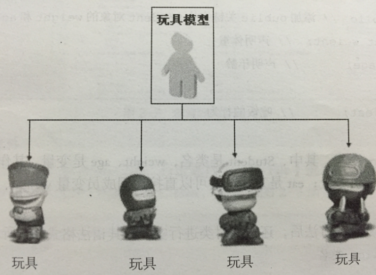

类和对象
面向对象编程的2个非常重要的概念：类和对象
对象是面向对象编程的核心，在使用对象的过程中，为了将具有共同特征和行为的一组对象抽象定义，提出了另外一个新的概念——类
类就相当于制造飞机时的图纸，用它来进行创建的飞机就相当于对象
类
人以类聚 物以群分。
具有相似内部状态和运动规律的实体的集合(或统称为抽象)。
具有相同属性和行为事物的统称
类是抽象的,在使用的时候通常会找到这个类的一个具体的存在,使用这个具体的存在。一个类可以找到多个对象
对象
某一个具体事物的存在 ,在现实世界中可以是看得见摸得着的。
可以是直接使用的
类和对象之间的关系

小总结：类就是创建对象的模板
练习：区分类和对象
奔驰汽车 类
奔驰smart 类
张三的那辆奔驰smart 对象
狗 类
大黄狗 类
李四家那只大黄狗 对象
水果 类
苹果 类
红苹果 类 红富士苹果 类
我嘴里吃了一半的苹果 对象
类的构成
类(Class) 由3个部分构成
- 类的名称 :类名
- 类的属性 :一组数据
- 类的方法 :允许对进行操作的方法 (行为)
<1> 举例：
1）人类设计,只关心3样东西:
- 事物名称(类名):人(Person)
- 属性:身高(height)、年龄(age)
- 方法(行为/功能):跑(run)、打架(fight)
2）狗类的设计
- 类名:狗(Dog)
- 属性:品种 、毛色、性别、名字、 腿儿的数量
- 方法(行为/功能):叫 、跑、咬人、吃、摇尾巴

类的抽象
如何把日常生活中的事物抽象成程序中的类?
拥有相同(或者类似)属性和行为的对象都可以抽像出一个类
方法:一般名词都是类(名词提炼法)
<1> 坦克发射3颗炮弹轰掉了2架飞机
- 坦克--》可以抽象成 类
- 炮弹--》可以抽象成类
- 飞机-》可以抽象成类
<2> 小明在公车上牵着一条叼着热狗的狗
- 小明--》 人类
- 公车--》 交通工具类
- 热狗--》 食物类
- 狗--》 狗类
<3>【想一想】如下图中，有哪些类呢？
说明：
- 人
- 枪
- 子弹
- 手榴弹
- 刀子
- 箱子
<4>【想一想】如下图中，有哪些类呢？
说明:
- 向日葵
- 类名: xrk
- 属性:
- 行为: 放阳光
- 豌豆
- 类名: wd
- 属性: 颜色 、发型,血量
- 行为:发炮, 摇头
- 坚果:
- 类名:jg
- 属性:血量 类型
- 行为:阻挡;
- 僵尸:
- 类名:js
- 属性:颜色、血量、 类型、速度
- 行为:走 跑跳 吃 死